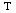

Text
Drawing text
XDrawChem has two general text drawing modes: text boxes and point labels. Text boxes are freely placed text, while point labels are atatched to a point in a drawing (e.g., the Cl label indicating a chlorine).
Text boxes may be placed anywhere and may contain multiple lines. Point labels are one line and centered on the point. To draw text, select the text tool. Click anywhere except a point to draw a text box. To draw a point label, highlight a point by moving over it and left click.
Working with text
Buttons appear on the format toolbar to make text bold, italic, underlined, superscript, or subscript. Note that text may be only one of these, or plain text. Type your text first. To format regions of text, highlight the text with the mouse or with Shift+Arrow keys. Click a toolbar button or use standard keys to fromat the selected text.
XDrawChem will attempt to add hydrogens and adjust subscripts where appropriate. The author apologizes for any inconvenience ths may cause. Please submit bug reports if XDrawChem is mangling your text labels.